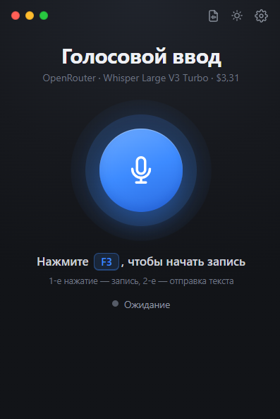
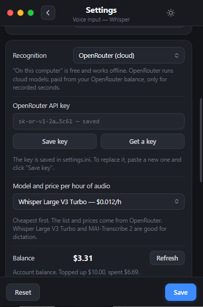
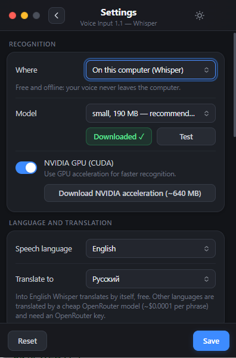

Голосовой ввод и переводчик для Windows
Нажали F3, сказали, снова F3 — и текст вставился туда, где стоит курсор: в чат, Блокнот, браузер, Word. Со знаками препинания.
Версия 1.6 · бесплатно, открытый код (MIT) · ~75 МБ · Windows 10/11 x64

Что умеет
Всё просто: одна клавиша, и текст там, где нужно.
Без интернета
Whisper (whisper.cpp) и GigaAM от Сбера работают прямо на компьютере: бесплатно, голос никуда не уходит. GigaAM сама ставит знаки препинания и распознаёт русскую фразу за доли секунды, для Whisper есть ускорение на видеокартах NVIDIA.
Или в облаке
Модели распознавания OpenRouter от $0,012 за час записи. Программа показывает цену каждой модели и ваш баланс.
Обходит блокировку микрофона
Если корпоративный антивирус (например, Касперский) не даёт программам микрофон — запись через вкладку обычного браузера.
Аудио и видео в текст
MP3, WAV, M4A, MP4, MKV и другие файлы — в расшифровку .txt и субтитры .srt.
Переводчик
Говорите на одном языке — получаете текст на другом: кнопка «Перевести на» на главном экране. Английский — через Whisper, ещё 35 языков — через OpenRouter.
Пишет, пока вы говорите
С моделью GigaAM каждая фраза вставляется сразу после короткой паузы — не нужно ждать конца записи. Живёт в трее, работает на Windows 10 без Win+H.
Скриншоты
Главное окно и настройки, светлая и тёмная тема.


Установка за 2 минуты
Без установщика и регистрации. Распаковали и запустили.
- Скачайте VoiceDictate-win-x64.zip и распакуйте в папку без русских букв, например
C:\VoiceDictate. - Запустите VoiceDictate.exe. Если Windows покажет «Система Windows защитила ваш компьютер» — «Подробнее» → «Выполнить в любом случае» (программа не подписана сертификатом).
- Откройте настройки (шестерёнка) и выберите, где распознавать: на компьютере — нажмите «Скачать» у модели (190 МБ, один раз; для русской речи лучше выбрать GigaAM v3, 220 МБ), или OpenRouter — вставьте ключ API.
- Выберите язык речи, встаньте в любое текстовое поле, нажмите F3, скажите фразу, нажмите F3 ещё раз.
Цены в облаке
Цена за 1 час записи через OpenRouter, ноябрь 2026. На компьютере — бесплатно.
| Модель | 1 час |
|---|---|
| Whisper Large V3 Turbo | $0,012 |
| Whisper Large V3 | $0,027 |
| Voxtral Mini 3B | $0,06 |
| MAI-Transcribe 2 | $0,10 |
| Scribe v2 | $0,22 |
| GPT Transcribe | $0,27 |
Актуальные цены программа сама загружает с OpenRouter.
Вопросы
Это бесплатно?
Да. Программа бесплатная, с открытым кодом (MIT). Распознавание на компьютере через Whisper ничего не стоит. Платно только облако OpenRouter, если вы его включите, — с вашего баланса OpenRouter.
Работает без интернета?
Да, в режиме «На компьютере» с моделью Whisper или GigaAM. Модель скачивается один раз (190–550 МБ).
Что такое GigaAM и чем она лучше Whisper?
GigaAM v3 — открытая модель распознавания русской речи от Сбера (лицензия MIT). На обычном процессоре она распознаёт фразу за доли секунды, сама ставит знаки препинания и умеет вставлять текст по фразам прямо во время записи. Но понимает только русский: для других языков, перевода на английский своими силами и расшифровки файлов используется Whisper.
Полоска громкости не двигается — что делать?
Проверьте в Windows: Параметры → Конфиденциальность → Микрофон. Если микрофон блокирует корпоративный антивирус, выберите в настройках «Запись звука: через браузер».
Какие версии Windows поддерживаются?
Windows 10 и Windows 11, 64-бит.